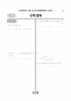

문제지


시험지를 먼저 풀어 보세요. 등급컷·표준점수·난이도는 흐리게 가려 뒀어요.
| 등급 | 원점수 | 표준점수 | 백분위 |
|---|---|---|---|
| 1 | 84 | 133 | 96 |
| 2 | 75 | 127 | 89 |
| 3 | 62 | 119 | 76 |
| 4 | 47 | 107 | 59 |
| 5 | 29 | 90 | 40 |
| 6 | 15 | 79 | 22 |
| 7 | 10 | 76 | 8 |
| 8 | 6 | 74 | 3 |
등급별 컷 · 만점 100점
| 등급 | 표준점수 이상 | 인원(명) | 비율 |
|---|---|---|---|
| 1 | 133 | 12,764 | 4.4% |
| 2 | 127 | 22,259 | 7.67% |
| 3 | 119 | 35,253 | 12.15% |
| 4 | 107 | 49,403 | 17.03% |
| 5 | 90 | 55,000 | 18.95% |
| 6 | 79 | 52,717 | 18.17% |
| 7 | 76 | 45,974 | 15.84% |
| 8 | 74 | 7,796 | 2.69% |
| 9 | 66 | 9,006 | 3.1% |
수학 영역 전체 응시자 기준이에요.
출처: 시·도교육청이 공개한 전국연합학력평가 성적 분석·통계자료(공개 자료 보기).
발행 기관: 시·도교육청(전국연합학력평가). 파일 위치: 이 사이트가 보관한 사본. 저작권은 발행 기관에 있습니다. 원본과 다르거나 게시 중단이 필요하면 연락처로 알려 주세요. 등급컷 출처 구분은 데이터 원칙에서 설명합니다.
막대 색은 역대 대비 난이도 · 진한 막대가 이 시험 · 막대를 누르면 그 회차로 이동
| 회차 | 1등급컷 | 표점 최고 | 1등급 표점 | 난이도 |
|---|---|---|---|---|
| 7월 학평2026년 고3이 시험 | 84 | 150 | 133 | 보통 |
| 3월 학평2026년 고3 | 84 | 150 | 134 | 쉬움 |
| 7월 학평2025년 고3 | 86 | 148 | 135 | 매우 쉬움 |
| 3월 학평2025년 고3 | 81 | 157 | 136 | 쉬움 |
| 10월 학평2024년 고3 | 82 | 151 | 136 | 어려움 |
| 7월 학평2024년 고3 | 81 | 156 | 135 | 쉬움 |
| 3월 학평2024년 고3 | 81 | 154 | 137 | 보통 |
| 10월 학평2023년 고3 | 85 | 150 | 135 | 쉬움 |
| 7월 학평2023년 고3 | 80 | 157 | 136 | 어려움 |
| 4월 학평2023년 고3 | 77 | 162 | 136 | 어려움 |